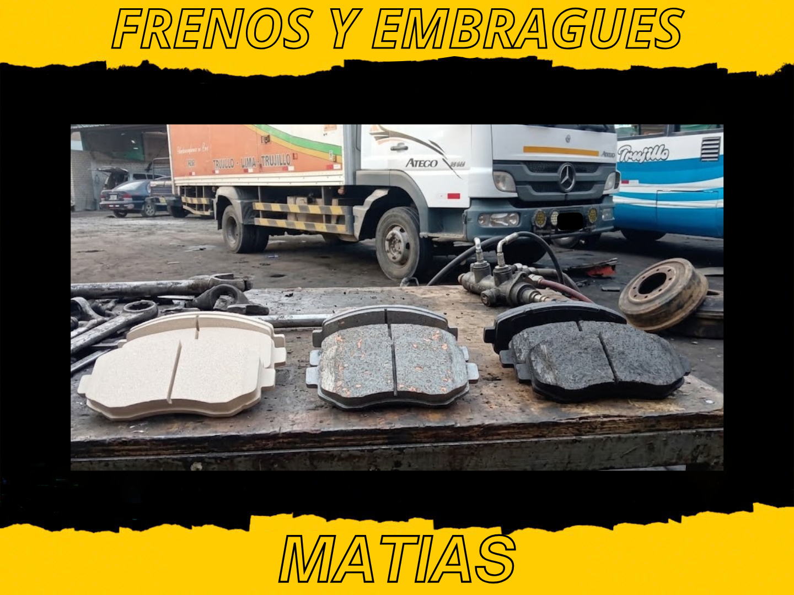

La pregunta "¿qué pastilla le pongo?" no tiene una sola respuesta correcta — depende de cómo usas el vehículo. Las tres familias de pastillas se diferencian principalmente en el material de fricción, y eso afecta el ruido que hacen, cuánto polvo generan, cómo se comportan con calor y qué tan rápido desgastan el disco.
Pastillas orgánicas (NAO)
Hechas con fibras orgánicas (vidrio, caucho, kevlar) unidas con resina, sin metal en cantidades significativas.
- Ventajas: las más silenciosas de las tres, generan menos polvo visible, son suaves con el disco (lo desgastan poco) y suelen ser las más económicas
- Desventajas: se desgastan más rápido que las otras dos, pierden eficiencia con temperaturas altas sostenidas y no son ideales para carga pesada o frenadas frecuentes y fuertes
- Mejor para: manejo urbano tranquilo, vehículos livianos, quien prioriza silencio y bajo costo por encima de durabilidad extrema
Pastillas semi-metálicas
Combinan fibras con un 30% a 65% de metal (acero, hierro, cobre) en su composición.
- Ventajas: mejor disipación de calor que las orgánicas, más resistentes en frenadas fuertes y repetidas, buena relación precio-durabilidad
- Desventajas: más ruidosas, generan más polvo (visible en los rines como polvo oscuro) y desgastan el disco más que las cerámicas
- Mejor para: uso mixto ciudad-carretera, vehículos con carga moderada, camionetas y unidades de trabajo diario
Pastillas cerámicas
Hechas con fibras cerámicas densas mezcladas con pequeñas cantidades de material metálico y filamentos de cobre.
- Ventajas: las más silenciosas después de las orgánicas, generan menos polvo y de color más claro (menos visible en los rines), mantienen rendimiento consistente en un rango amplio de temperatura, y son las más suaves con el disco
- Desventajas: son las más costosas de las tres, y en frenadas extremas sostenidas (bajadas largas con carga pesada) pueden perder algo de mordida frente a una semi-metálica de alto rendimiento
- Mejor para: vehículos particulares que buscan comodidad, silencio y limpieza de los rines, uso diario en ciudad y carretera
Comparación rápida
| Criterio | Orgánica | Semi-metálica | Cerámica |
|---|---|---|---|
| Ruido | Bajo | Alto | Bajo |
| Polvo | Bajo | Alto | Bajo-medio |
| Duración | Corta | Media-alta | Alta |
| Desgaste del disco | Bajo | Medio-alto | Bajo |
| Costo | Bajo | Medio | Alto |
¿Y si tengo un camión o vehículo de carga?
Para vehículos pesados o de trabajo intensivo, la elección suele inclinarse hacia semi-metálicas de alto rendimiento, porque el criterio principal ya no es el silencio o el polvo, sino la capacidad de disipar calor en frenadas repetidas con carga. Cuando revisamos un camión en el taller, la recomendación depende del tipo de ruta (urbana con paradas frecuentes vs. carretera con pendientes largas) más que de una regla fija.
Recomendación práctica
Si no tienes claro cuál te conviene, la pregunta que te hacemos en el taller es: ¿priorizas silencio y limpieza, o resistencia bajo carga y frenadas exigentes? La primera respuesta apunta a cerámicas, la segunda a semi-metálicas. Las orgánicas hoy en día se recomiendan sobre todo cuando el presupuesto es la prioridad principal y el uso es liviano.
Te recomendamos según tu vehículo y uso real
Cuéntanos qué manejas y cómo lo usas, y te decimos qué tipo de pastilla tiene más sentido para ti.